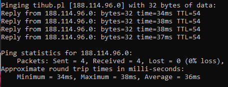

VLAN, połączenie z internetem przez port Ethernet
Użyta konfiguracja sprzętowa:
- Router: Mikrotik RB941-2nD-TC
hAP lite
- Przełącznik: D-Link DES-1100-16
Na początek przystąpie do połączenia stacji z routerem oraz rozpoczęcie jego konfiguracji programem WinBox, dla pewności zresetuję obecną konfigurację

Teraz utworzę dwa VLANy w Interfaces w zakładce VLAN, które będą pracowały na porcie 2

Następnie przydziele utworzonym VLANom następujące adresy: 192.168.69.1/24 i 192.168.70.1/24 korzystając z IP > Addresses
Przejdę teraz do IP > DHCP Server w celu utworzenia domyślnych zakresów z serwerem DNS ustawionym na 8.8.8.8 dla danych VLANów używając opcji DHCP Setup
Dodam również Klientów DHCP w IP > DHCP Client, aby klientom w tych sieciach zostawały automatycznie przydzielane adresy IP
Dzierżawy klientów powinny być widoczne w zakładce Leases w IP > DHCP Server
Teraz przełączę kabel Ethernet od Routera do Przełącznika na porcie 1, którego będę używał do jego dalszej konfiguracji
Przejdę do ustawień VLAN i utworzę dwa VLANy o takich samych nazwach i ID, jako port trunkingowy użyję portu 8 i ustawię go jako tagowany
Wykonam teraz następujące połączenia:
Stacja 1 - Przełącznik,
Port 2 (Przydzielony adres: 192.168.69.254)
Stacja 2 - Przełącznik, Port 3 (Przydzielony adres: -
192.168.70.254)
Router, Port 2 - Przełącznik, Port 8
W sekcji IP > Firewall dodaje obie sieci z wyjściowym interfejstem jako Port 2, w zakładce Action ustawiam wartość Action na masquerade
Obie stacje powinny otrzymać dostęp do internetu
(Wyżej podany Zrzut Ekranu nie został wykonany z podłączoną wcześniejszą konfiguracją, ponieważ w miejscu, w którym dokańczałem daną konfigrację nie było możliwości podłączenia routera bezpośrednio do sieci, lecz jedynie niekompatybilnym łączem światłowodowym SC/APC lub drugim routerem 💀)